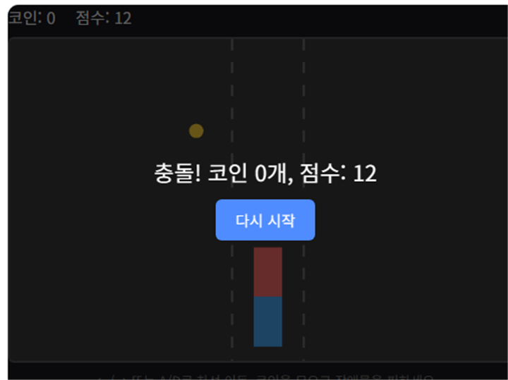

코인 레이싱은 차선을 오가며 떨어지는 코인을 모으고 장애물을 피하는 레이싱 게임입니다. 장애물을 피하는 동시에 코인 경로를 잘 타는 것이 고득점의 핵심입니다.
기본 규칙
- ← / → 방향키(또는 A / D 키)로 차선을 이동합니다.
- 코인을 지나가면 자동으로 획득되어 점수가 오릅니다.
- 장애물과 부딪히면 게임이 종료됩니다.
고득점 팁
1. 장애물 회피가 코인 수집보다 우선입니다
코인 한두 개를 더 먹으려다 장애물에 부딪히면 그 순간까지 모은 점수를 모두 잃습니다. 코인이 몰려 있는 차선이라도 바로 앞에 장애물이 있다면 과감히 포기하고 다른 차선으로 피하세요.
2. 코인이 많은 차선을 미리 살펴 이동하세요
화면 위쪽에서 코인이 몰려 있는 차선을 미리 확인하고 여유 있게 차선을 옮겨두면, 급하게 방향을 트는 상황을 줄이고 장애물에도 더 안전하게 대응할 수 있습니다.
직접 플레이해보고 싶다면 여기서 바로 시작할 수 있습니다.